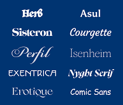

یک متن با فونت مناسب باعث می شود که کاربر راحت تر از همیشه متن را بخواند و همچنین متن دارای گیرایی بیشتری باشد. با انتخاب یک سری فونت های نامناسب و بد فقط کاربر را سردرگم می کنیم و مانع از خوانایی متن می شویم. پس به عبارت دیگر اگر بتوانید فونت های درستی را انتخاب و در نوشته هایتان استفاده کنید قادر به بهبود رابط کاربری در دنیای وب خواهید شد.
انتخاب فونت مناسب برای وبسایت شما نقشی حیاتی در تجربه کاربری و خوانایی محتوا ایفا میکند. فونتها فقط مجموعهای از حروف نیستند؛ آنها شخصیت وبسایت شما را بازتاب میدهند و بر چگونگی درک پیام شما توسط مخاطبان تأثیر میگذارند. یک فونت خوب میتواند خوانندگان را مجذوب کند، در حالی که یک فونت نامناسب میتواند آنها را از سایت شما دور کند.
علاوه بر خوانایی و زیباییشناسی، به عملکرد فونتها نیز توجه کنید. فونتهای وب باید در اندازهها و دستگاههای مختلف (موبایل، تبلت، دسکتاپ) به خوبی نمایش داده شوند. همچنین، تعداد فونتهای استفاده شده در یک صفحه را به حداقل برسانید (معمولاً یک تا دو فونت کافی است) تا سرعت بارگذاری سایت شما کاهش نیابد. ترکیب هوشمندانه یک فونت برای عناوین و یک فونت دیگر برای متن اصلی میتواند به سلسله مراتب بصری کمک کرده و ظاهر حرفهای به وبسایت شما ببخشد. با در نظر گرفتن این نکات، میتوانید فونتی را انتخاب کنید که نه تنها زیبا باشد، بلکه تجربه کاربری دلنشینی را برای بازدیدکنندگان شما رقم بزند.